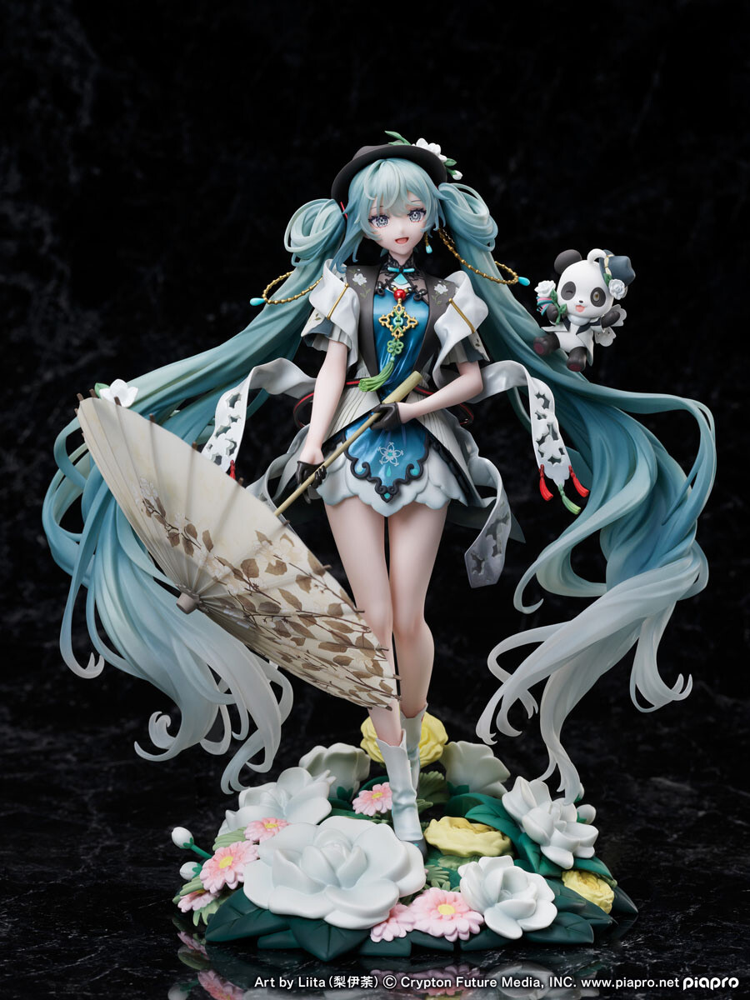
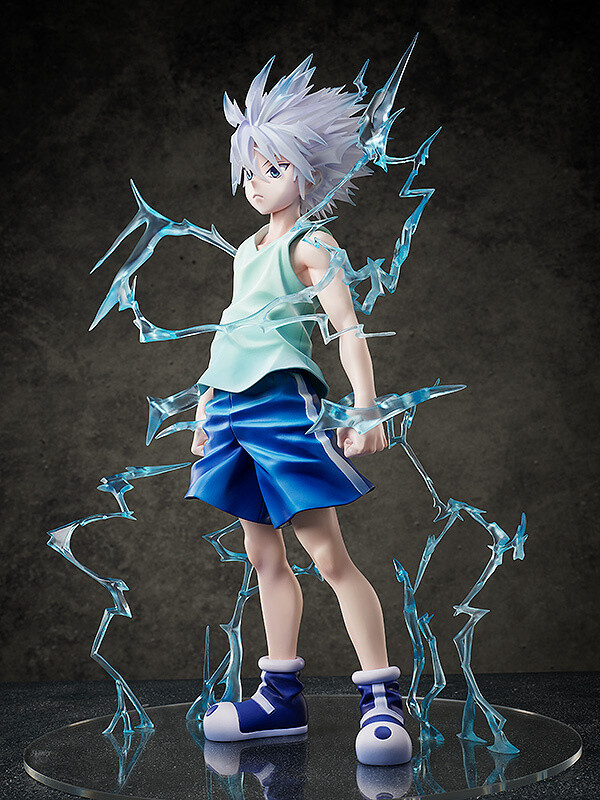

Scale figures are usually very detailed, and are more expensive than other figures. These figures are also the ones many people enjoy collecting! These figures are not posable, come with an attached base, and are categorized by size. Sometimes these figures come with accessories that you have to assemble yourself. While not always the case, these figures tend to be made from Japanese manufacturers such as Bandai Namco and GoodSmile Company, and depict characters from Japanese media

